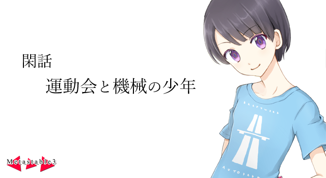

時は６月上旬の某日。晴れの特異日。燦々と照りつける初夏の日差しが運動場を明るく照らしており、舞い上がるグラウンドの土埃の匂いが鼻孔を突いた。
運動場に引かれたトラックの上では体操着を着た生徒が我先にと夢中で走っている。ある者がリードをすれば応援席から声援が上がり、また別の者が抜かされれば群衆に動揺の色が広がった。
『七組リード！ はやいはやい！ このまま一位を奪うのかっ！？』
野外に設置されたスピーカーからは放送部の生徒の声が響いている。
そう今日は体育祭の日。華々しい運動部の連中が勝手に盛り上がり、文化部の日陰者たちが舌打ちをする、一年に一度のイベントである。
『まもなく次の競技が始まります。出場生徒の皆さんは指定の場所に集まってください』
スピーカーから流れるＢＧＭに耳を傾けながら藤白はよし、と気合を入れた。
「じゃあちょっと行ってくるぜ」
そう言ってハチマキをキュッと締める。
「じゃあね、藤白くん。がんばって」
「カズくん、ふぁいとー」
希海と紀佳の応援を受け、藤白はスタート地点に赴く。トラックを横切り、地面を踏みしめるたびに心臓が高鳴った。
『さて、次の競技は障害物競走！ 午前最後の種目です！ 今度はどんなドラマが待っているんでしょうか！』
白い石灰で引かれたスタートラインの前に立つと、全校生徒からの視線がこの一点に集まっているのを感じる藤白だった。
（よし……）
やるぞ、と藤白は思う。今までの体育大会はそれなりに適当にやっていたが、今年は希海の目があるのだ。運動が得意な希海の目、である。かっこ悪いところは見せられない。
「位置について……よーい」
教師がスターターピストルを上空に向けた。あともう一瞬の後には高らかな空砲が鳴り響き、競技がスタートする。だが今の藤白にはその一瞬が何十倍にも間延びしているように思えてならない。
パァン、と乾いた音が鳴り響く。
藤白は地面を蹴って、一気に駆け出した。ストライドを大きく取り、普段よりもずっと早いペースで足を動かす。
『おーっと！ まず飛び出たのは六組です！』
よし、出だしは良い。走るのは苦手ではないし、体の大きな藤白なら他の連中よりも一歩が大きいぶん有利だ。だが――
『さあ第一の障害、編み網ネット！ ここで一波乱が起こるのでしょうか！』
だが、目の前に敷かれた大きな樹脂製のネット。選手はこれを下からくぐって抜けなければならない。体の大きさが不利になる障害だった。
（うおおおおおっ！！）
藤白はスタートダッシュの勢いそのままにネットに頭を突っ込んだ。そして体操着が汚れるのもためらわず|匍匐《ほふく》前進を敢行する。
ネットの格子の大きさはちょうど頭が一つ入るくらいの大きなものだ。だがこのサイズが曲者である。頭や腕が簡単に穴に入ってしまい、思うように前へ進むことができない。
もがくようにしてようやく脱出したネット。だが、そんな藤白の目に飛び込んできたものは――
（げっ、抜かれてる……！）
顔を上げてると、別の走者の背中が見えた。ハチマキの色は青色……四組である。目下一位を走っているチーム。ここいらでひとつ勝ち星を上げておきたかった。
（くそっ……負けるか！）
藤白は必死に相手を追いかけた。単なる競争では藤白に分があるのか、その背中が段々と近づいてくる。そしてあと少しで抜き去れる……というところで、
『さて、次なる障害は“麻袋”です！』
麻袋かあ……と藤白は思った。この障害はあまり得意ではないし、そもそもの問題として絵面的にかっこが悪い。できれば避けたい部類のものだったが、まさかコレだけ避けて通るわけにもいかない。藤白は覚悟を決めて麻袋に両足を突っ込んだ。
（くう……意外とキツイなコレ……）
麻袋に両足を突っ込んでピョンピョンと跳ねる藤白。どうやらライバルもこれは苦手だったようで、藤白との差はそのままだ。
その後、スプーンでピンポン球を運び、平均台の上を全力で駆け抜けるが、一行に目的の背中との差は縮まらない。
そして最後の障害物がやってきた。ハードルだ。
しめた。ハードルなら走るのとそう変わらないし、体の大きな自分にはいくらか有利。そう心の中でほくそ笑んだ藤白は一層力ピッチを挙げてスピードをあげる。
第一、第二のハードルはいとも簡単に越えた。歩幅を調整し、連なるハードルをぴょんとリズムよく越えていく。
続くハードルも同じような調子で飛び越える。その猛烈なスピードに先をゆくライバルとの差がどんどん縮まっていく。
（よし、これはいける！）
これで希海に格好いいところが見せられる。そんな考えが頭をよぎると、その視線は観客席に向かった。
だが、観客席に希海はいない。体育委員の仕事でどこかへ行ったのか。それともトイレか。そんな希海のありもしない姿を探して藤白は視線を滑るように移動させる。
相変わらず眠たそうな目でこちらを見ている紀佳。
大きく手を降って応援する佐竹。
別のクラスの知らない誰か。
グラウンドの隅に隠れるように座っている少年。
（あれ、あの子……？）
藤白はその姿を妙に思った。
なぜならこのグラウンドには生徒と先生以外の姿はいない。今日が平日なせいもあるが、小学生ならともかく高校生にもなった息子や娘の運動会を参観しようとする稀有な家族などほとんどいないからだ。
さらにその子は周りに保護者を伴っているような様子もなく、ただ一人、木陰に座って熱心にグラウンドの様子を見つめている。
迷子かな？ もしそうなら、これが終わった後にでも実行委員に連絡を――
「ってうわっ！！」
次の瞬間、足が何かに引っ張られるのを感じた。しまった。ハードルに引っかかった！ そう後悔するも時すでに遅し。藤白の体は勢い良く地面に叩きつけられ、その隙に追いかけていた背中ははるか遠くまで行ってしまう。
「あっ……ああああああ……」
やってしまった、と藤白は思った。
「……す、すまん」
応援席に帰って来るなり、藤白は深々と頭を下げた。
「ったーく。何やってんだよ藤白」
「カズくん、すっごい格好悪い」
佐竹と紀佳が呆れたように返す。
「まあでも、青山さんに見られなかっただけ良しとしろ」
悔しいが佐竹の言うとおりだった。希海は今実行委員の仕事で席を外しているらしい。
「もう、よそ見してるから」
「ていうか紀佳その格好は……」
藤白はそう言って紀佳の体へと視線を向ける。
紀佳の格好。上半身はごく普通の、学校指定の体操着である。だが問題は……
「いいじゃん藤白！ 紀佳ちゃんのブルマ姿なんて滅多に見られるもんじゃないしな！」
そう。紀佳の格好は端的に言うとブルマだった。今はもう二十一世紀の現代にはまずお目にかかれないであろう、かつての女性の体操着。赤いブルマから伸びた白い足がどこか艶めかしさを感じさせる代物である。
「これ？ これは仮装競争の格好。これなら走りやすい」
「そういう問題じゃないだろ……ていうか」
藤白はそう言って周りをぐるっと見渡してみる。応援席にはすでに人はまばらで、残っているのは藤白達と、あと数名のグループだけだ。
「そういえばもう昼休憩か」
そして藤白と佐竹は紀佳と別れた。紀佳は仲の良い友達と一緒に昼ごはんを食べるらしい。希海は実行委員の仕事で席を外しているし、仕方なく藤白は佐竹と昼食を共にすることにした。